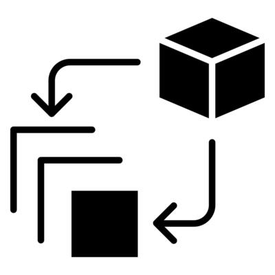
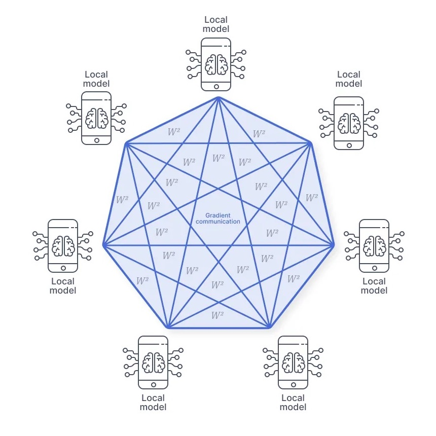
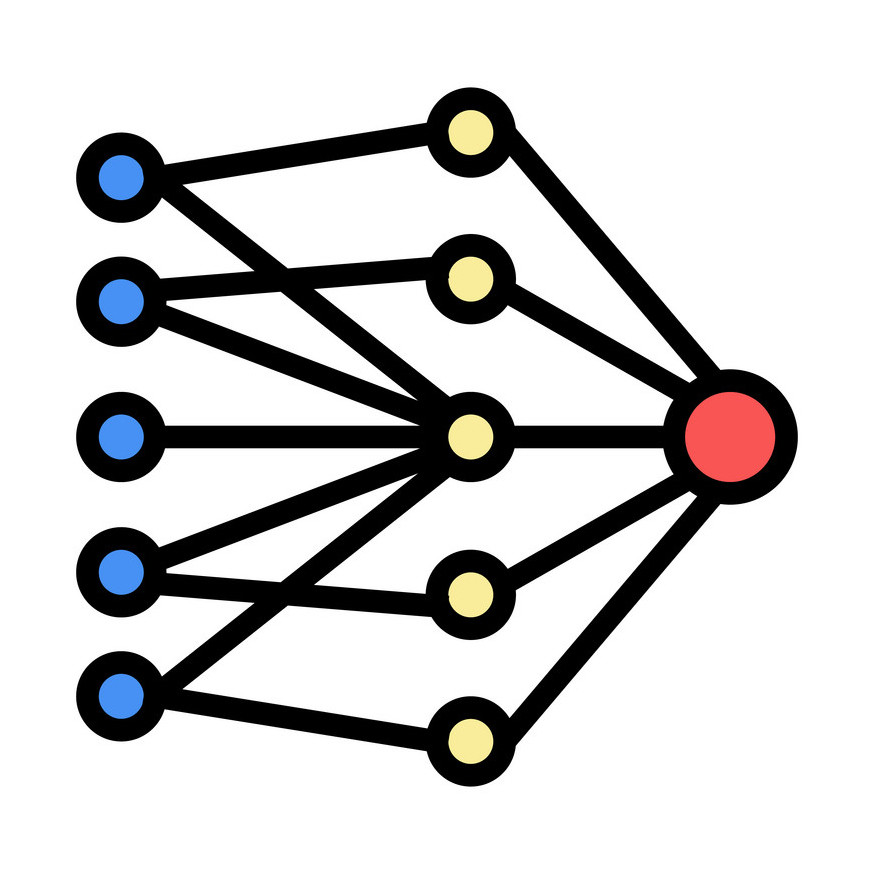
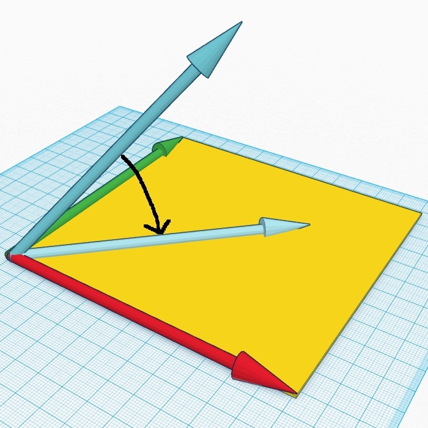
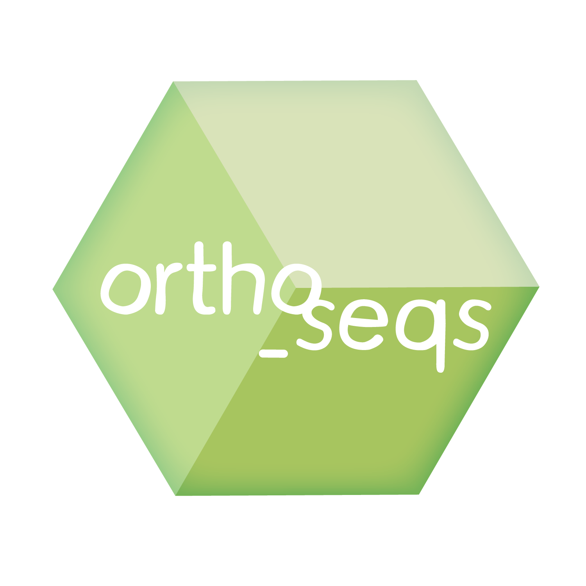

|  | A Summary of Sequential Optimization through Locally Important Dimensions (SOLID)
Links: Report, Slides (Presentation given in April 2025) March 2025 - April 2025 (School Project) |
|  | A Survey of Federated Learning
Links: Report, Slides (Presentation given in April 2025) January 2025 - April 2025 (School Project) |
|  | Comparing MCMC and VaNBayes for Heteroskedastic Models
Links: Report, Slides (Presentation given in December 2024) August 2024 - December 2024 (School Project) |
|  | A Comparison of Random Projection-Based Test Statistics in High Dimensions
Links: Report, Slides (Presentation given in December 2024) August 2024 - December 2024 (School Project) |
 |
Paycheck Pathways
Links: Report, Slides (Presentation given in April 2024) March 2024 - April 2024 (School Project) |
 |
Advisor App
Link: GitHub January 2023 - May 2023 (School Project) |
| Log Anomaly Detection and Resolution (LADR)
Link: Slides (Presentation given in August 2022) May 2022 - August 2022 (While at IBM) |
|
|  | ortho_seqs
Links: Website, Paper (Preprint) June 2021 - August 2021 (While at C-Z BioHub) |